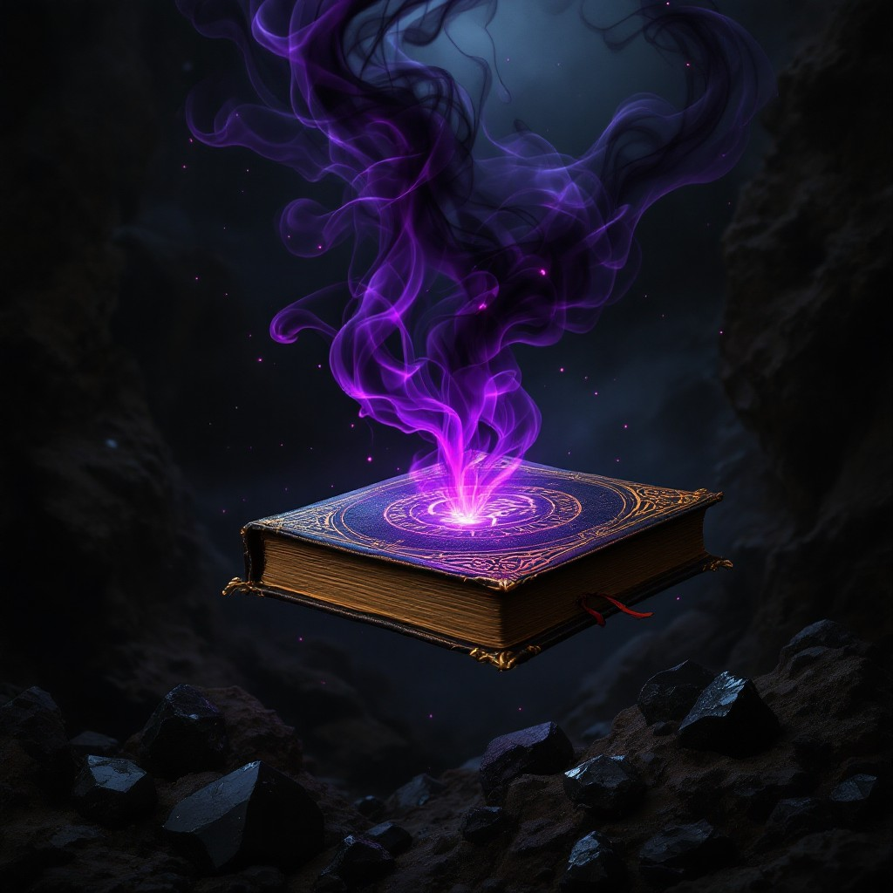

Sylvaris Lorelia Duskbane
Sylvaris Lorelia Duskbane, born under the celestial alignment of the moon and sun’s final rays, is a guardian of twilight magic, trained within the ancient Tower of Eldara. Descended from the legendary Duskbane Clan, his family has long protected the world from darkness using the power of light and shadow. As the last of his line, Sylvaris wrote Lorelia Mystic Codex, a magical tome containing ancient rituals, incantations, and the knowledge of his clan, ensuring their legacy would not be lost to time. The book serves as both a guide and a weapon against the growing threats of eternal darkness, and Sylvaris himself remains vigilant, hoping one day a worthy successor will rise to continue his watch.
